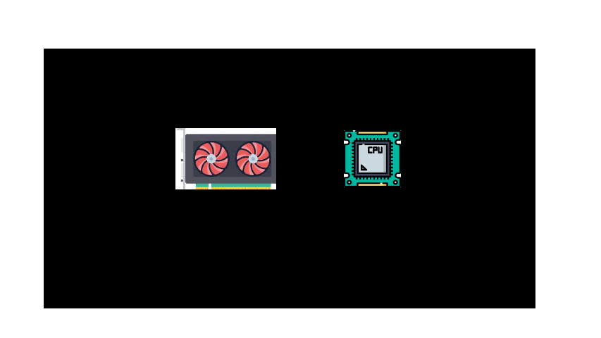

Using GPUs at Northwestern#
Quest allocation
In this workshop, we’ll leverage the power of Quest GPU nodes to run our open-source LLMs. To do so, please use the temporary Quest allocation: e32337.
Afterwards, you can request your own Quest allocation here
{kind=link}
Note
There are other options for GPUs:
Google Colab allows you to use GPUs for free with browser-based notebooks
Cloud platforms like Amazon Web Services, Google Cloud Platform, and Microsoft Azure all offer cloud-based GPUs for a price
Many other cloud providers have sprung up, such as Paperspace
You can buy your own if you have the budget and expertise
Parallel Computing for LLMs#
LLM Acceleration
The purpose of running our LLMs on GPU nodes is to speed up processing. In order to understand this, you’ll often hear us talk about CPUs, GPUs, and CUDA. This section breaks down these terms.
CPU
Much like your own computer, some of our KLC and Quest nodes are equipped with both processors and graphics cards. A processor or central processing unit (CPU) is responsible for all the mathematical and logical calculations on a node. In a nutshell, it runs code. While CPUs are extremely powerful and complete most tasks in an infinitesimally short amount of time, a CPU core can only handle one task at a time and runs things sequentially.
{kind=link}
Multiple CPU Cores
One way to speed up processing is through parallel computing across multiple CPU cores. Parallel computing is a method of solving a single problem by breaking it down into smaller chunks that run simultaneously. A CPU can break up a task and distributes it over multiple CPU cores.
{kind=link}
Note
The latest generation of KLC nodes have 64 CPU cores and 2TB of shared RAM 🚀. This means you could in theory run 64 parallel (simultaneous) processes on a single KLC node.
GPUs
A graphics card or graphics processing unit (GPU) is a specialized hardware component that can efficiently handle parallel mathematical operations. In comparison to the 24 cores you can use on KLC, a A100 GPU contains 6,912 CUDA cores (the H100 GPU has an astounding 18,432 CUDA cores). While a GPU core is less powerful than an individual CPU core, their sheer volume make them ideal for handling certain kinds of large amounts of computations in parallel, especially the vector and matrix operations for which GPUs were designed. We will see an example later of the speedup that GPUs provide for this kind of task.
{kind=link}
Note
If GPUs are so much better at parallelization than CPUs, why aren’t all tasks given to GPUs?
Some tasks simply can’t be parallelized, if the input to one depends on the output from another. In this case, they must be run in serial for logical reasons.
Even when parallelization is possible, some tasks actually take longer if parallelized. Sometimes the overhead of coordinating processes across cores might actually take longer than having a single CPU core complete the task alone.
CUDA
The potential inefficiency of parallelization raises the question of how your system knows when to send a task to CPUs or to GPUs? For Nvidia-based GPU’s, this is where CUDA comes in. CUDA (Compute Unified Device Architecture) is a powerful software platform that helps computer programs run faster. On the GPU nodes, we use it to solve performance intensive problems by optimizing when to allocate certains tasks to CPU processing or GPU processing.
In this animation, CUDA determines which tasks to delegate to GPUs or to CPUs.

Note
You will not typically directy program in CUDA, nor most of you in Pytorch/Tensorflow. Most of you will probably stick to using the highest layers of abstraction, such as the Hugging Face Transformer library. However, it is sometimes necessary to know which version of CUDA or Pytorch/Tensorflow you need to have installed.
Sample GPU Python Code#
Testing for GPU availability
To get started with the GPU nodes, here is a sample Python script. The code below allows you to test whether GPUs are available on a node and runs tensors. This file is located in the course github repository
pytorch_gpu_test.py
import torch
# Check if CUDA is available, and which version
if torch.cuda.is_available():
print(f"CUDA version {torch.version.cuda} is available")
print("Number of GPUs available:", torch.cuda.device_count())
print("GPU:", torch.cuda.get_device_name(0))
else:
print("CUDA is not available.")
# Check if CUDA is available and set the device accordingly
device = torch.device("cuda" if torch.cuda.is_available() else "cpu")
# Print whether a GPU or CPU is being used
if device.type == 'cuda':
print("Using GPU")
else:
print("Using CPU")
# Create two random tensors
tensor1 = torch.randn(1000, 1000, device=device)
tensor2 = torch.randn(1000, 1000, device=device)
# Add the two tensors, the operation will be performed on the GPU if available
result = tensor1 + tensor2
print(result)
Take note!
For vector and matrix operations, GPUs is orders of magnitude faster than CPUs
Note
Code execution in a Jupyter notebook is demonstrated in this video
SLURM Script to Access GPU Nodes#
Slurm scripts
For this workshop, we’ll submit jobs to the Quest GPU nodes through a SLURM (scheduler) script. You can launch the sample python code using this script.
Documentation on using slurm on Quest
Northwestern GPU Resources
Quest has dozens of Nvidia-based GPU nodes available for use. We will show you how to access them via a Jupyter notebook using Quest on Demand and using the Slurm scheduler. Both of these methods require that you are part of a Quest allocation.
pytorch_gpu_test.sh
#!/bin/bash
#SBATCH --account=e32337
#SBATCH --partition gengpu
#SBATCH --nodes=1
#SBATCH --ntasks-per-node=1
#SBATCH --gres=gpu:a100:1
#SBATCH --constraint=pcie
#SBATCH --time 0:30:00
#SBATCH --mem=40G
#SBATCH --output=/projects/e32337/slurm-output/slurm-%j.out
module purge all
module use --append /kellogg/software/Modules/modulefiles
module load micromamba/latest
source /kellogg/software/Modules/modulefiles/micromamba/load_hook.sh
micromamba activate /kellogg/software/envs/llm-test-env
python pytorch_gpu_test.py
Breaking down this script
--accountis the Quest allocation you are given.--partition=gengpudirects you to GPU nodes on the Quest Genomics Cluster--ntasks-per-node=1this line specifies how many cores of the node you will use. Setting--ntasks-per-node=2will run your script on two cores of the node. Only adjust this parameter if your code is parallelizable, otherwise it will slow your job down, not speed it up.--gres=gpu:a100:1This line specifies that the job requires 1 GPU of type “a100”. You can select more.--constraintSpecifies the type of A100 preferred, choices are “sxm” (80GB of GPU memory) or “pcie” (40GB of GPU memory)---nodes=1specifies that the job will be run on 1 node of the cluster.--time==00:30:00indicates that this job will be allowed to run for up to 30 minutes.--memspecifies how much memory you are requesting.--outputspecifies the path and file where the stdout and stderr output streams will get saved.
After accessing the GPU node, the script loads python and activates the llm-test-env conda environmen, which has all the necessary python packages installed. Finally it executes the python code.